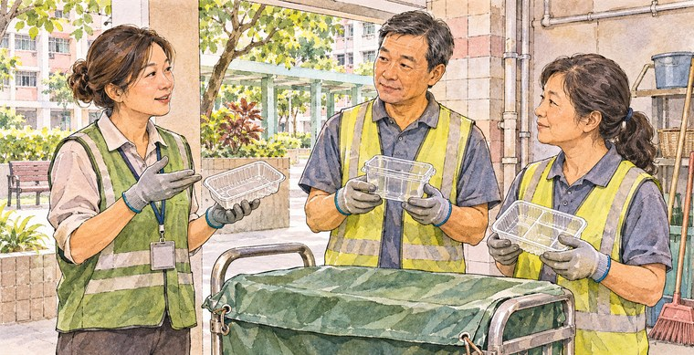

SUS-32 · 香港 · 15–20分钟 · 回收物质量 · 整车来料验收 · 材料有效回收
原本干净的回收物流，会有一车因污染被拒收吗？

回收链各环节的质量
香港「绿在区区」的指引分别说明哪些材料可回收、投放前如何处理，以及收集后的下游处理方式。海外公开指引也指出，回收物污染的影响可能不只限于造成污染的那件物品。下文的住宅小区和处理合同均为虚构，合同中的数值门槛不是香港公共回收服务的规定。
课堂决策
你是虚构住宅小区 Harbour Court 的小区委员会主席，要决定下周的回收政策。A 维持现行清单，只收干净的硬质塑料容器；B 在此基础上增加合同处理商接收的指定种类的干净塑料食品托盘。这两类材料只要符合处理商的质量条件，就都有明确的接收渠道。本案例不是要为无处可去的回收物找出路。
这次规划练习假定两种政策面对的都是同一批 1,200 公斤无危险性的废弃物。A 将 1,000 公斤纳入小区统一回收，其余 200 公斤作为残余废弃物处置。B 则将全部 1,200 公斤纳入统一回收。比较时，废弃物产生量和居民参与情况保持不变；这些是虚构的规划数据，并非未来的实测结果。
如果整车来料通过验收，A 的小区总成本为 1,000港元，B 为 1,200港元。这些费用包括所列材料的收运、常规分拣、处理和全部残余废弃物的处置。单周预算上限为 1,800港元，没有回收返利。无论采用哪种政策，整车来料一旦被拒收，都要加付 500港元的处理费。
只有达到污染控制要求，处理商才会接收整车来料；批准收运前，必须先看清具体验收规则。来料通过验收并去除杂质后，目标塑料按设定的 90% 质量得率转化为可用的再生塑料。剩余部分作为残余废弃物依法处置。这个固定得率是教学假设，不代表现实中回收处理商的实际表现。
同一个虚构周：验收前的比较| 政策 | 回收箱收集量 | 其他残余废弃物 | 通过验收时的成本 |
|---|
| A · 维持较窄的清单 | 1,000 公斤 | 200 公斤 | HK$1,000 |
| B · 增收托盘 | 1,200 公斤 | 0 公斤 | HK$1,200 |
你的决策你会暂时保留 A，还是扩大范围、改用 B？多收的 200 公斤能证明材料有效回收量增加了吗？批准政策之前，你需要了解哪些验收要求和来料构成信息？
第二轮 · 多了一项资料
虚构合同规定，按质量对每一车送达的来料进行整车验收。杂质不得超过送达总质量的 5%，恰好达到上限也算合格。一旦超过 5%，整车来料在常规分拣前就会被拒收；按这份合同，车内的目标塑料不会得到回收。合同不包含其他接收方，也不安排补救性分拣。
本课堂情景将成分检查结果视为精确值：A 的 1,000 公斤来料中，980 公斤是符合接收要求的目标塑料，20 公斤是不予接收的材料。B 的 1,200 公斤来料中，1,120 公斤是目标塑料，80 公斤是不予接收的材料。因此，新增的 200 公斤中，140 公斤是目标塑料，60 公斤是杂质。
干净且符合要求的托盘是目标材料，不算杂质。这里的不予接收材料，是指混入回收物的食物残渣和不符合要求的包装。B 的杂质更多，是本案例对这些安排设定的结果，并不是说托盘总会导致拒收，也不是说居民学不会正确分类。
第三个报价方案 C 保留 B 较宽的回收清单，另花 600港元聘请受过培训的人员在送达前进行预分拣。按本练习设定，预分拣恰好去除 60 公斤杂质，不损失任何目标塑料，并安全处置拣出的杂质。因此，C 实际送达 1,140 公斤。如果通过验收，总成本为 1,800港元。
在这一周的比较中，C 的除杂效果和固定报价都作为已确认的假设，不保证今后每周都能达到同样的效果或维持同样的价格。通过验收后的常规分拣已计入基础成本，无法在合同验收前挽救 B。不要求居民处理危险材料，也不要求他们无偿参与分拣。
你的决策在 A、维持原样的 B 和拨款实施的 C 中作出选择。计算每种方案送达来料的杂质占比、可用再生塑料产出和总成本。说明 C 的额外支出换来了多少新增产出，以及为什么这些数字都不能证明哪个方案的总体环境影响最低。
讲评 · 按整车来料验收
A：20 ÷ 1,000 = 2%，通过验收。B：80 ÷ 1,200 ≈ 6.67%，整车被拒收。C：20 ÷ 1,140 ≈ 1.75%，通过验收。分母是完成预分拣（如有）后实际送达的总质量，而不是目标塑料的质量。
这是一道门槛，不是按比例扣减。B 只有通过验收，才能从 1,120 公斤目标塑料中按 90% 的得率产出 1,008 公斤再生塑料。然而，按设定的合同，整车被拒收后，再生塑料产出为零。现实合同可能允许采取其他办法；本案例并不是说所有地方都会把受污染的整车来料直接丢弃。
讲评 · 追踪可用产出
A 产出 980 × 90% = 882 公斤再生塑料。C 产出 1,120 × 90% = 1,008 公斤。B 的产出为零。C 比 A 多产出 126 公斤，并不是多投入回收渠道的 200 公斤全都变成了产出。杂质和处理损耗不算有效回收的材料。
把全部 1,200 公斤的去向列出来，质量账能对上。A 留下 318 公斤残余废弃物：未进入回收渠道的 200 公斤、杂质 20 公斤、处理损耗 98 公斤。B 的全部 1,200 公斤都作为残余废弃物处置。C 留下 192 公斤残余废弃物：送达前去除 60 公斤，送达后去除 20 公斤，处理损耗 112 公斤。没有任何材料凭空消失。
讲评 · 在预算内作选择
A 的成本是 1,000港元。B 被拒收，成本为 1,200港元 + 500港元 = 1,700港元。C 通过验收，成本为 1,200港元 + 600港元 = 1,800港元，不产生拒收费。三个方案都不超预算。按题目给出的条件，维持原样的 B 比 A 花费更多，再生塑料产出却更少。
与 A 相比，C 多花 800港元，多产出 126 公斤再生塑料：800港元 ÷ 126 ≈ 每增加一公斤花费 6.35港元。这是小区的增量成本，不是碳减排成本，也不是塑料的市场价值。题目没有给出每公斤的环境价值。
如果委员会认为多回收的可用材料值得再花 800港元，并接受题目给定的效果条件，就选 C。如果优先考虑保留这笔预算，就选 A。计算并不能得出唯一的最优方案。在找到负担得起、经验证能满足质量要求的改进办法之前，先保留较窄的清单；不要只因为 B 的收集量看起来更好就选它。
讲评 · 先核实质量，再扩大范围
接下来几周，应实测来料构成和回收结果，不要假定这些质量数据会原样重现。核实安全开展预分拣的能力、人员工时、验收判定、拒收费和下游产出记录。明确投放指引、分开收集或更换合同都有可能有帮助，但在本练习中，没有哪种办法既不花钱又已被证实可以替代现有方案。
分别报告收集量、通过验收的来料量、回收得到的再生材料量，以及残余废弃物处置量。材料有效回收量增加，并不意味着总体环境影响一定降低：运输、分拣能耗、用水、材料质量，以及再生材料实际替代原生塑料的情况，也都要考虑。今后采购时可以考虑从源头减少废弃物和重复使用，但这并不能改变本练习设定的这一周里已经丢弃的材料。
教师说明
第 0–4 分钟：作出初步选择，指出还缺哪些验收信息。第 4–9 分钟：公布来料构成和整车验收门槛，再计算哪些方案通过验收。第 9–14 分钟：核对产出、残余质量和成本。第 14–18 分钟：比较 A 和 C，拟一句对外表述，说明可用产出，而不只是收集了多少公斤。
SUS-02 核对各类废弃物的去向，不涉及处理商的验收门槛。SUS-11 问的是，获得认证的材料是否已经落实处理渠道。本案例中，两类目标塑料都有接收渠道；决定可用材料能否进入该渠道的，是整车来料的质量门槛，结果不会随杂质比例线性变化。不要把这一门槛当作香港的法定标准，不要归咎于居民，也不要以为单靠一块告示牌就能保证符合要求。
第二轮
虚构合同规定，按质量对每一车送达的来料进行整车验收。杂质不得超过送达总质量的 5%，恰好达到上限也算合格。一旦超过 5%，整车来料在常规分拣前就会被拒收；按这份合同，车内的目标塑料不会得到回收。合同不包含其他接收方，也不安排补救性分拣。
本课堂情景将成分检查结果视为精确值：A 的 1,000 公斤来料中，980 公斤是符合接收要求的目标塑料，20 公斤是不予接收的材料。B 的 1,200 公斤来料中，1,120 公斤是目标塑料，80 公斤是不予接收的材料。因此，新增的 200 公斤中，140 公斤是目标塑料，60 公斤是杂质。
干净且符合要求的托盘是目标材料，不算杂质。这里的不予接收材料，是指混入回收物的食物残渣和不符合要求的包装。B 的杂质更多，是本案例对这些安排设定的结果，并不是说托盘总会导致拒收，也不是说居民学不会正确分类。
第三个报价方案 C 保留 B 较宽的回收清单，另花 600港元聘请受过培训的人员在送达前进行预分拣。按本练习设定，预分拣恰好去除 60 公斤杂质，不损失任何目标塑料，并安全处置拣出的杂质。因此，C 实际送达 1,140 公斤。如果通过验收，总成本为 1,800港元。
在这一周的比较中，C 的除杂效果和固定报价都作为已确认的假设，不保证今后每周都能达到同样的效果或维持同样的价格。通过验收后的常规分拣已计入基础成本，无法在合同验收前挽救 B。不要求居民处理危险材料，也不要求他们无偿参与分拣。
你的决策在 A、维持原样的 B 和拨款实施的 C 中作出选择。计算每种方案送达来料的杂质占比、可用再生塑料产出和总成本。说明 C 的额外支出换来了多少新增产出，以及为什么这些数字都不能证明哪个方案的总体环境影响最低。